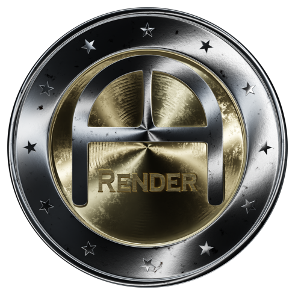
Modellazione 3D Coerente
Aiuto architetti, aziende dell’arredo e studi tecnici a comunicare i propri progetti con immagini chiare, coerenti e fedeli ai materiali reali.
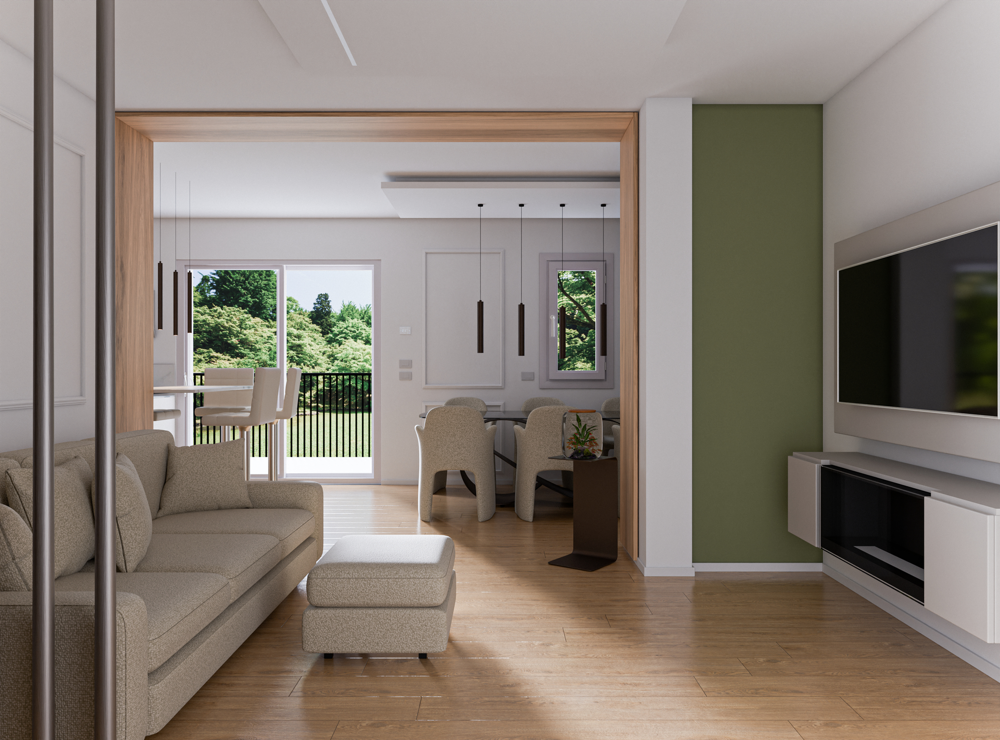
Precisione metrica per architettura, arredo e reverse engineering.
Soluzioni professionali per presentare progetti, prodotti e ambienti con precisione tecnica e impatto visivo.
Ricostruzione accurata da CAD, rilievi o concept. Geometrie pulite, materiali fedeli e asset ottimizzati per rendering, AR e produzione.
Interni, esterni e still‑life di prodotto con illuminazione fisica e materiali calibrati. Immagini pronte per cataloghi, presentazioni e marketing.
Video immersivi, fly‑through e presentazioni dinamiche per fiere, clienti e presentazioni professionali.
Modelli ottimizzati per web, mobile e AR. Ideali per configuratori, e‑commerce e cataloghi digitali.
Una selezione di lavori realizzati per architetti, aziende dell’arredo e studi tecnici. Ogni progetto è sviluppato con attenzione maniacale alla coerenza dei materiali e alla fedeltà delle proporzioni.
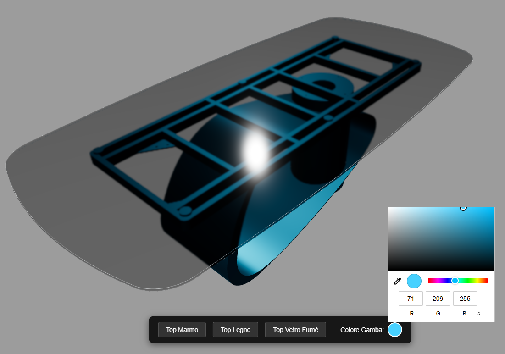
Configuratore 3D – personalizzazione materiali e colori in tempo reale
Apri il Configuratore →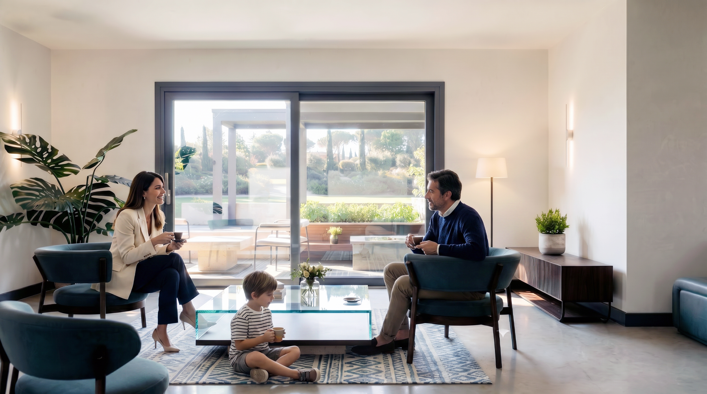
Render fotorealistico – zona living
Walkthrough virtuale
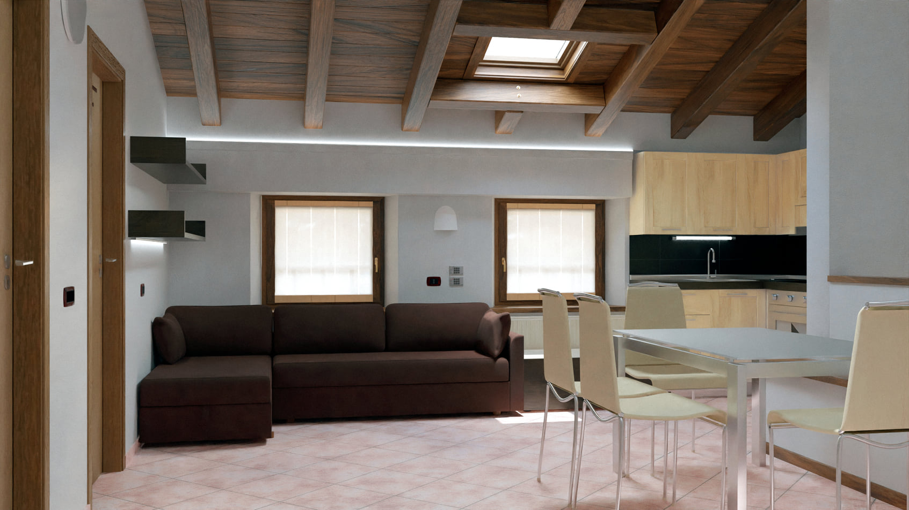
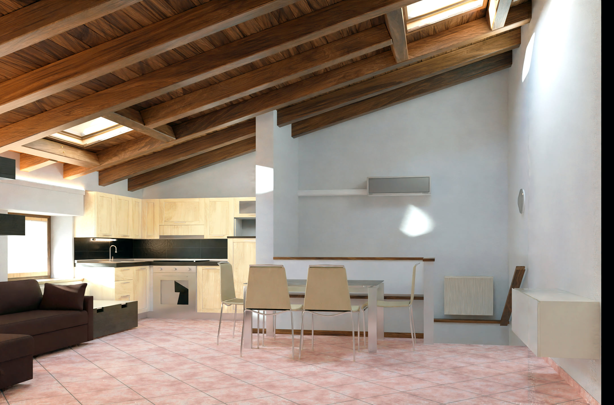
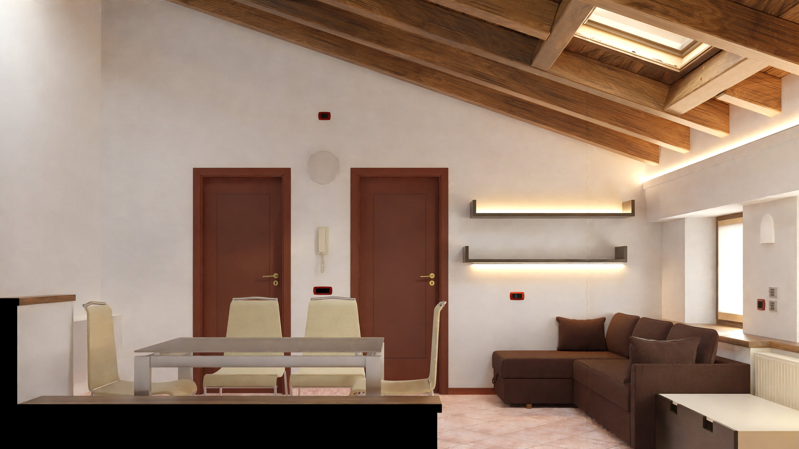
Miniappartamento mansardato - Render per inserzione immobiliare
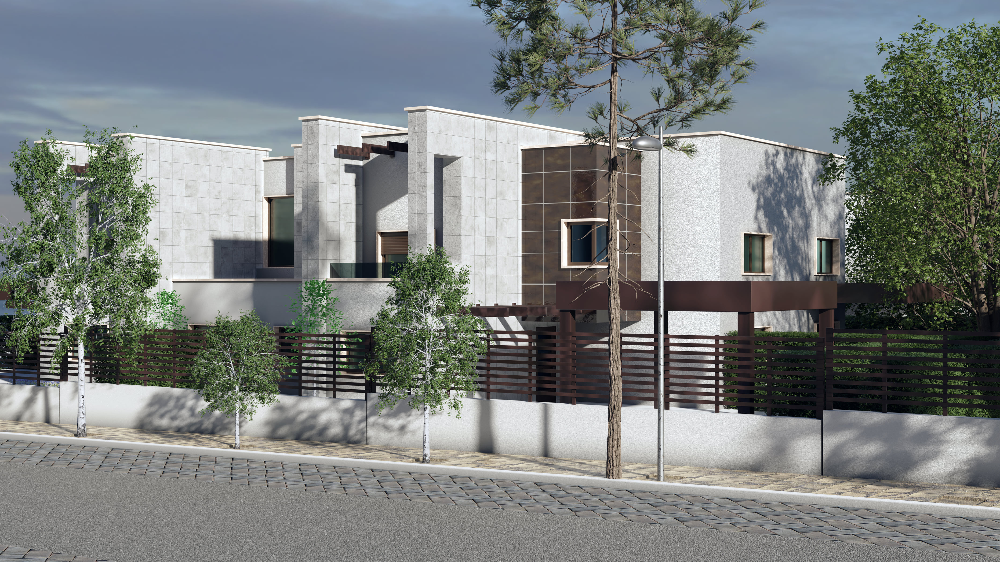
Villetta moderna – modellazione da fotografia
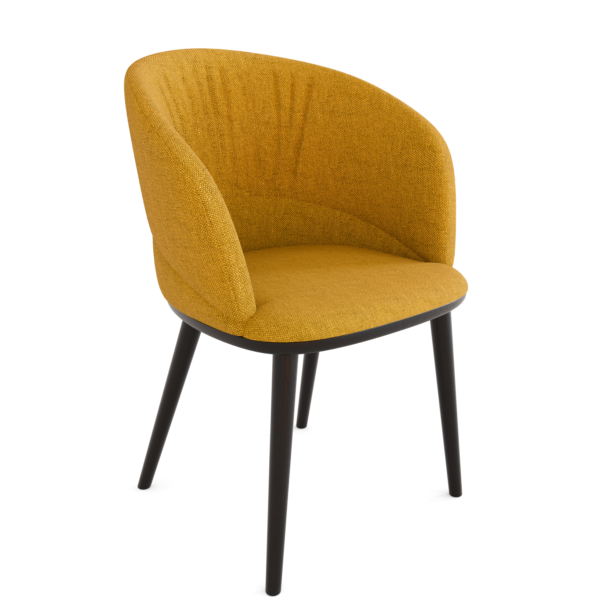
Reverse engineering – da oggetto reale
Fotogrammetria – ricostruzione bracciolo divano
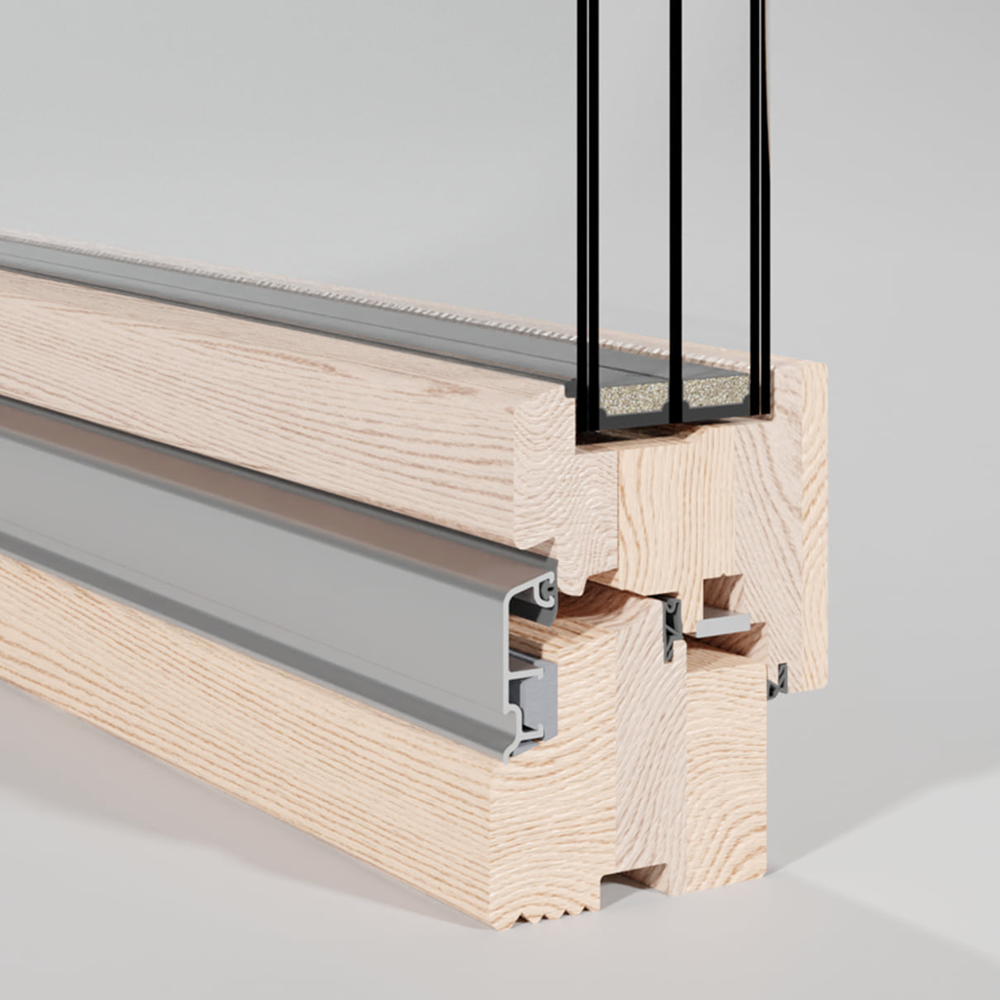
Modello da disegni CAD 2D
Animazione cucina – elementi reali da catalogo
Animazione prodotto – social media
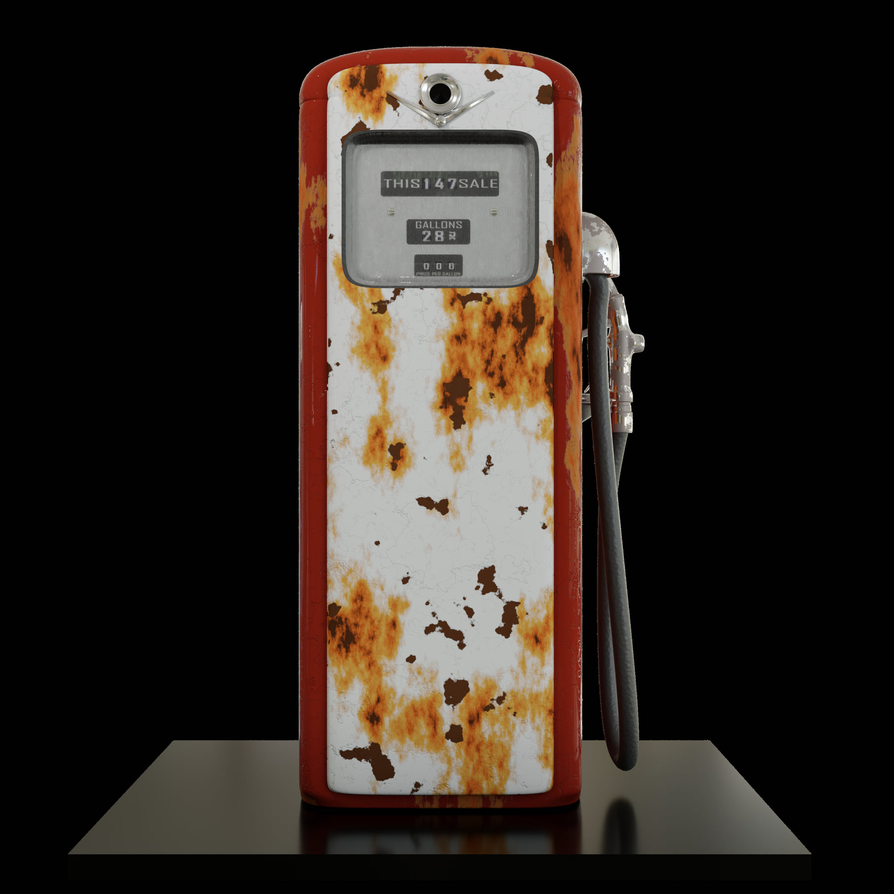
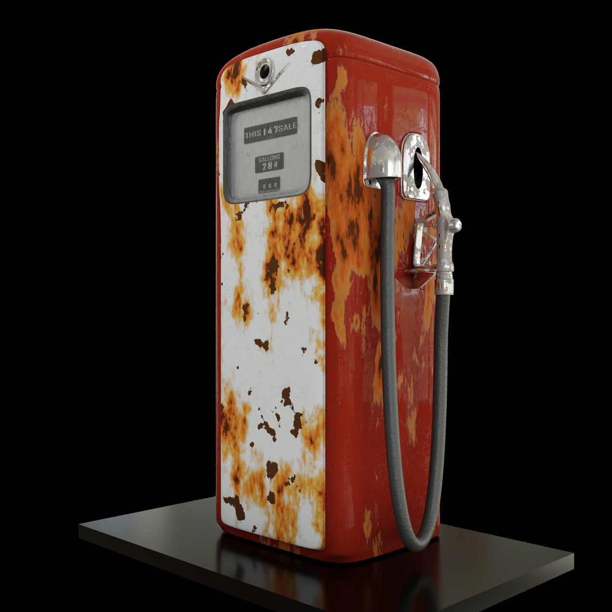
Pompa benzina vintage - Texture procedurali
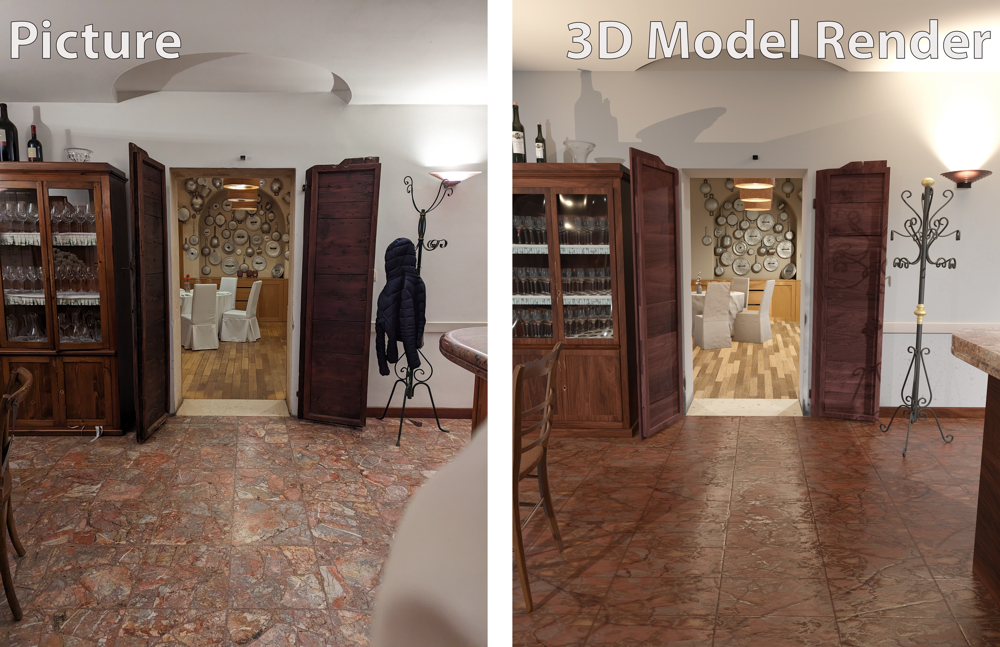
Modellazione da fotografia - Texture procedurali
Un flusso chiaro, rapido e trasparente. Nessuna sorpresa: solo risultati coerenti e pronti per essere presentati.
Sono Andrea, specialista in modellazione 3D e rendering fotorealistici. Aiuto architetti, aziende dell’arredo e studi tecnici a trasformare progetti complessi in visualizzazioni chiare, coerenti e comunicative. Mi occupo personalmente di ogni fase: modellazione, materiali, illuminazione e post‑produzione. Il mio obiettivo è uno: coerenza tecnica, qualità visiva e comunicazione efficace.
Hai un progetto da visualizzare? Invia i materiali e ricevi un preventivo entro 24 ore.
Richiedi un preventivo in 24hOppure invia una mail a
Puoi allegare CAD, PDF, immagini o concept. Risposta garantita.